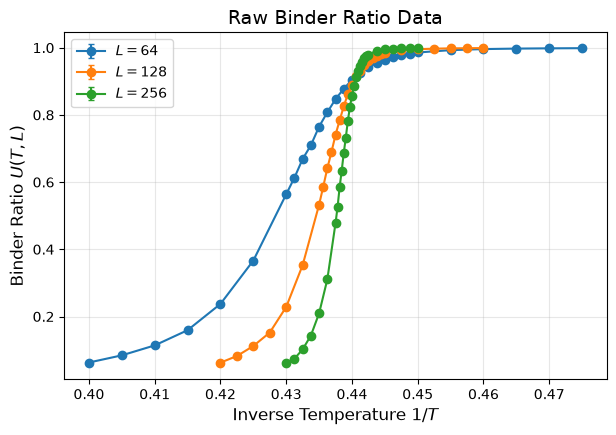
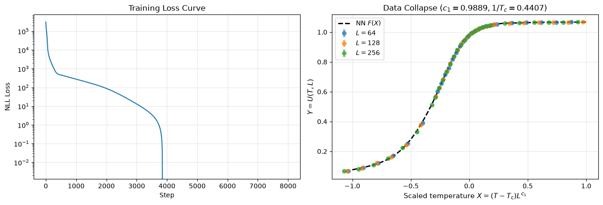

Two-Dimensional Ising Model (Flax NNX)#
This tutorial demonstrates how to use jaxfss with Flax NNX to perform Neural Scaling Analysis (NSA) on the two-dimensional ferromagnetic Ising model on a square lattice.
1. Theoretical Background#
The Binder ratio \(U(T, L)\) is a dimensionless quantity defined by fourth- and second-order magnetization moments:
Because \(U(T, L)\) is dimensionless, its critical exponent \(c_2\) is zero (\(c_2 = 0\)). The finite-size scaling hypothesis reads:
where:
\(1/T_{\mathrm{c}} = \frac{1}{2}\ln(1+\sqrt{2}) \approx 0.4406868\) (exact critical inverse temperature for square lattice).
\(c_1 = 1/\nu = 1.0\) (exact correlation length exponent).
\(F[\cdot]\) is the unknown universal scaling function.
2. Load and Inspect Data#
We use CriticalData to load the dataset (data/ising.txt).
import jax
import jax.numpy as jnp
import matplotlib.pyplot as plt
from flax import nnx
import optax
from softclip import SoftClip
import jaxfss
# Load Monte Carlo simulation data
dataset = jaxfss.CriticalData.from_file("data/ising.txt")
print(f"Loaded {dataset.n_data} data points.")
print(f"System sizes: {jnp.unique(dataset.Ls)}")
Loaded 86 data points.
System sizes: [ 64. 128. 256.]
Visualize the raw Binder ratio data.
plt.figure(figsize=(7, 4.5))
unique_Ls = sorted(list(set(dataset.Ls.flatten().tolist())))
for L in unique_Ls:
idx = dataset.Ls.flatten() == L
plt.errorbar(
dataset.Ts.flatten()[idx],
dataset.As.flatten()[idx],
yerr=dataset.As_err.flatten()[idx],
fmt="o-",
label=f"$L = {int(L)}$",
capsize=2
)
plt.xlabel(r"Inverse Temperature $1/T$", fontsize=12)
plt.ylabel(r"Binder Ratio $U(T, L)$", fontsize=12)
plt.title("Raw Binder Ratio Data", fontsize=14)
plt.legend()
plt.grid(True, alpha=0.3)
plt.show()

3. Set Up NNX Scaling Model#
We construct a FSSModel wrapping a RationalMLP scaling function and parameter bijectors:
\(c_1 > 0\) via
SoftClip(low=0.0)Scaled \(T_{\mathrm{c}} \in [-1, 1]\) via
SoftClip(low=-1.0, high=1.0)
bij_c1 = SoftClip(low=0.0)
bij_Tc = SoftClip(low=-1.0, high=1.0)
def bijector(p):
p1, pc = p
return jnp.array([bij_c1.forward(p1), bij_Tc.forward(pc)])
scaling_fn = jaxfss.RationalMLP(din=1, features=[20, 20, 1], rngs=nnx.Rngs(42))
model = jaxfss.FSSModel(scaling_fn=scaling_fn, n_critical=2, bijector=bijector)
train_data = dataset.train_data
Ls = train_data["system_size"]
Ts = train_data["temperature"]
As = train_data["observable"]
vAs = train_data["observable_var"]
def loss_fn(m: jaxfss.FSSModel):
y_pred = m(Ls, Ts)
return jaxfss.NLLLoss(As, y_pred, vAs)
4. Optimization with NNX#
We optimize the NNX model using jaxfss.fit with multi-optimizer support.
optimizer = {
"scaling_fn": optax.adam(learning_rate=1e-3),
"fss": optax.adam(learning_rate=1e-2)
}
steps = 8000
losses, critical_vals = jaxfss.fit(model, loss_fn, optimizer, steps)
c1_est, scaled_Tc_est = model.critical_params
Tc_est = float(dataset.bij_temperature.inverse(scaled_Tc_est))
c1_est = float(c1_est)
print("=== Estimation Results ===")
print(f"c_1 (exact = 1.0) : {c1_est:.5f}")
print(f"1/Tc (exact = 0.44069) : {Tc_est:.5f}")
=== Estimation Results ===
c_1 (exact = 1.0) : 0.98888
1/Tc (exact = 0.44069) : 0.44071
5. Scaling Collapse and NN Fitting Curve#
fig, (ax1, ax2) = plt.subplots(1, 2, figsize=(13, 4.5))
# Loss curve
ax1.plot(losses)
ax1.set_yscale("log")
ax1.set_xlabel("Step")
ax1.set_ylabel("NLL Loss")
ax1.set_title("Training Loss Curve")
ax1.grid(True, alpha=0.3)
# Scaling collapse
for L in unique_Ls:
idx = dataset.Ls.flatten() == L
t = Ts.flatten()[idx]
s = Ls.flatten()[idx]
x = (t - scaled_Tc_est) * (s ** c1_est)
y = As.flatten()[idx]
yerr = jnp.sqrt(vAs.flatten()[idx])
ax2.errorbar(x, y, yerr=yerr, fmt="o", label=f"$L={int(L)}$", alpha=0.7, capsize=2)
# Plot NN prediction
x_grid = jnp.linspace(-1.0, 1.0, 200).reshape(-1, 1)
y_pred = model.scaling_fn(x_grid)
ax2.plot(x_grid, y_pred, color="black", lw=2, linestyle="--", label="NN $F(X)$")
ax2.set_xlabel(r"Scaled temperature $X = (T - T_{\mathrm{c}}) L^{c_1}$", fontsize=11)
ax2.set_ylabel(r"$Y = U(T, L)$", fontsize=11)
ax2.set_title(f"Data Collapse ($c_1={c1_est:.4f}, 1/T_c={Tc_est:.4f}$)", fontsize=12)
ax2.legend()
ax2.grid(True, alpha=0.3)
plt.tight_layout()
plt.show()
